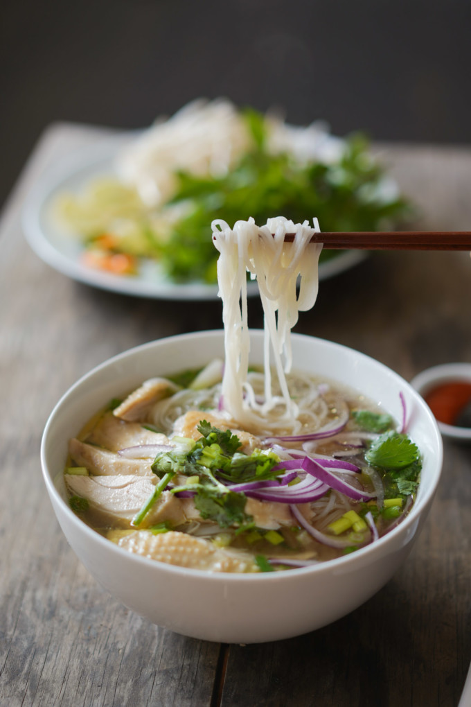

Pho Ga

Aside from bánh mì, phở is the other smash hit that put Vietnamese cuisine on the map around the globe. It's a humble soup that uses affordable ingredients and turns them into a flavorful and aromatic food staple.
Making phở is as easy as other chicken noodle soups, except with a twist on the seasoning and aromatics. Of course you have a slew of Vietnamese herbs that pair with this soup like many other Vietnamese dishes.
This recipes serves 6 bowls and takes approximately 25 minutes to prep and 50 minutes to cook.
Ingredients
- 2 medium white or yellow onions
- 20g of fresh ginger
- 2 tbsp of coriander seeds
- 1 cinnamon stick
- 2 star anise pods
- 1 whole chick (cut in half)
- 16 c of water
- 2.5 tbsp salt
- 2 tbsp sugar
- 2 tsp of msg or 2 tbsp of vegetarian seasong (optional)
- 16 oz dried phở noodles
- bean sprouts
- thais basil
- lemon (sliced in to wedges)
- ngo gai (culantro, optional)
- sliced jalapenos (optional)
- hoisin sauce
- sriracha
Steps
- On a sheet pan, roast the aromatics in the middle rack of an oven on 375°F to 400°F for 15-30 minutes or until dark brown but not blackened.
- Wrap the spices in foil and bake 350°F for 5 minutes (or roast on a pan medium heat until lightly browned and aromatic).
- Add the aromatics, spices, and all soup ingredients into a large stock pot and bring to a boil on high heat. Once it hits a boil, lower the heat to maintain a low boil and cook the chicken for 25-40 minutes until the chicken is cooked all the way through. You can use a thermometer to make sure the internal temperature reads 165°F (or the juices run clear when you cut into the deepest part of the chicken).
- Remove the chicken once done and rinse under cold water for one minute to cool. This will prevent the chicken from getting dark. Once the chicken has cooled, shred the meat into bite-sized pieces.
- Cook the rice noodles according to package instructions only just before you’re ready to serve it. Cooking the noodles usually take about 5 minutes after boiling the water.
- To assemble, start with portioning the noodles into a bowl, and then add the soup, shredded chicken, and accoutrements on top. The proportions of this entire recipe is purely a personalized one, but check the photo as a guide.